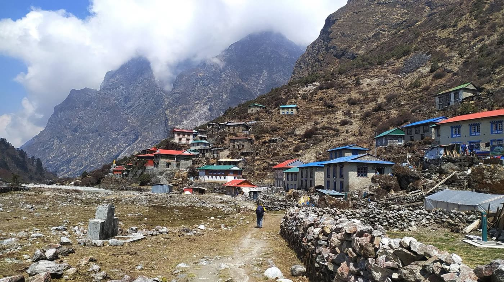
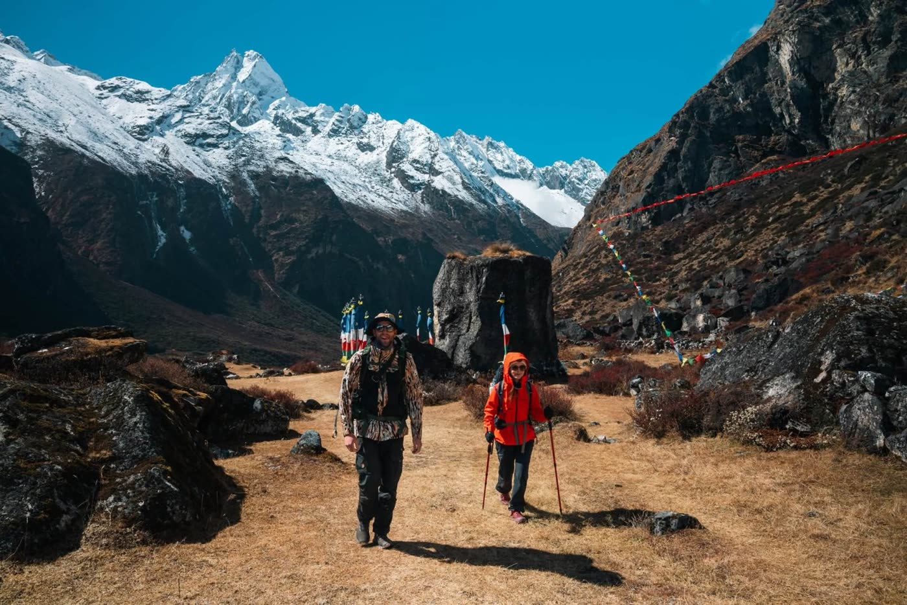
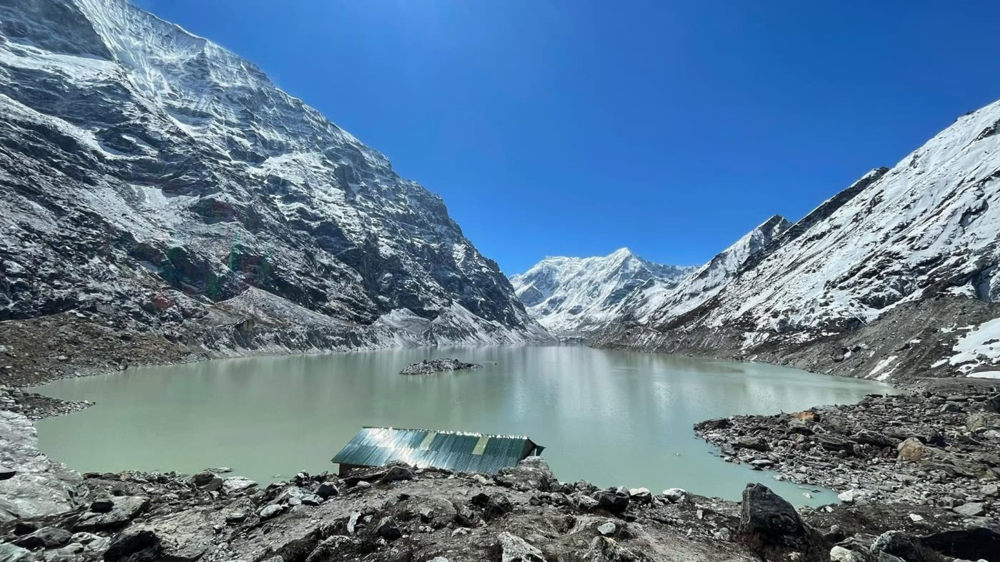
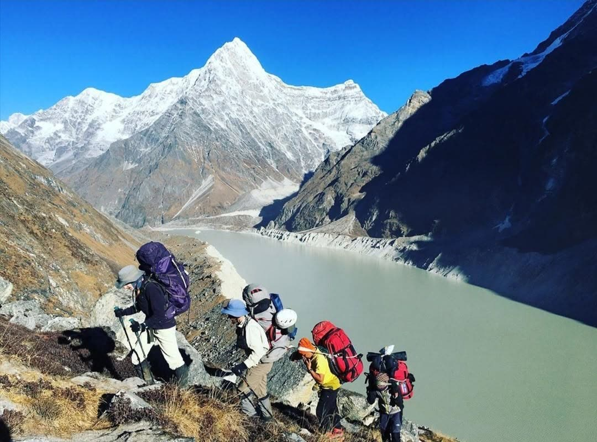

Rolwaling Trek
The Rolwaling Valley trek takes you into one of the quietest corners of the Nepal Himalaya. The valley lies in Dolakha District, between the Langtang and Everest regions and close to the Tibetan border.





Key Trip Facts
Trek Overview
Trip Highlights
Rolwaling Trek Introduction
Hidden between the Langtang and Everest Regions Trekking, the Rolwaling Valley is one of Nepal's most remote and rewarding treks. Set within the Gaurishankar Conservation Area, the trail climbs from terraced farmland through rhododendron forest and alpine meadows to Na village and the glacial Tsho Rolpa Lake at 4,540 metres.
Along the way, you will meet Sherpa communities, visit quiet monasteries and enjoy close views of sacred Gaurishankar. With far fewer trekkers than the popular routes, Rolwaling offers genuine Himalayan solitude. With Nepal Unique Treks, you walk with experienced local guides who put your safety, comfort and cultural connection first.
Rolwaling Trek Overview
The Rolwaling Valley trek takes you into one of the quietest corners of the Nepal Himalaya. The valley lies in Dolakha District, between the Langtang and Everest regions and close to the Tibetan border. It sits inside the Gaurishankar Conservation Area, which was established in 2010 and covers roughly 2,179 square kilometres, from subtropical forest to permanent ice.
The valley is home to Sherpa communities who settled here generations ago. The mountain that dominates it, Gaurishankar (7,134 m), is sacred to both Hindus and Buddhists. Hindus see it as the home of Shiva and Parvati, and the local Sherpa regard it as a living deity.
The standard route follows the Rolwaling Khola from the roadhead at Jagat up to the village of Na (4,180 m) and the glacial lake Tsho Rolpa (4,540 m). It is a teahouse and homestay trek in its lower and middle sections. It is much less crowded than Everest Base Camp Trek or Annapurna Base Camp Trek. On many days you will meet more mule trains and schoolchildren than other trekkers.
At Nepal Unique Treks, we run this trek as a 13-day journey, including arrival and departure days, and can adjust it to your pace and fitness.
Why Rolwaling Trek with Nepal Unique Treks?
Rolwaling is not a trek you want to organise on a whim. The roads are rough, the villages are small, facilities thin out quickly above Beding, and the weather can change your plans. The company you choose makes a real difference to how safe, smooth and enjoyable the trip is. Here is what you can expect from us.
Local guides who know this valley
Our guides are licensed, first-aid trained and familiar with the Rolwaling trails, the Sherpa villages and the changing mountain conditions. They know where the best viewpoints are, which lodges are the warmest, and when to slow down or turn around. That knowledge cannot be learned from a map.
An itinerary built around acclimatization.
Many rushed schedules push trekkers to Na and Tsho Rolpa too quickly. Ours include rest days at Beding and buffer time for weather, so your body has a fair chance to adapt and you can enjoy the lake rather than struggle toward it.
Small groups and personal attention.
We keep groups modest so that your guide can watch how each person is feeling and walk at a pace that suits the group. If you travel as a couple, a family or a private party, the trek is arranged around you.
Best advice before you book.
We will tell you plainly whether Rolwaling suits your fitness and experience, what the teahouses are really like, and what the best season is for your dates. If another route fits you better, we will say so.
Permits and logistics handled for you
Rolwaling's permit requirements and road conditions change from season to season. We take care of the Gaurishankar Conservation Area permit, the Dolakha area permits and your transport to the roadhead, and we confirm the current rules before each departure.
Safety as the first priority.
Your guide carries a first aid kit, monitors for signs of altitude sickness and has the authority to change the plan. We brief you on emergency procedures before you leave Kathmandu and encourage proper travel and evacuation insurance.
Responsible trekking that supports local people
We stay in local lodges and homestays, for our guides and porters, we will provide suitable clothing and insurance for our crew, and follow leave-no-trace principles. Your trek helps the communities that make this valley special.
Flexibility to suit you
Want a longer acclimatization schedule, a private trek, or a combination with another region? We can adjust the itinerary. Experienced trekkers can also ask about extensions such as the Tashi Lapcha pass, which we plan separately with specialist support.
When you trek Rolwaling with Nepal Unique Treks, you get more than a route and a permit. You get a team that cares how your journey feels from the first drive out of Kathmandu to the last farewell dinner. Get in touch to start planning your trek.
Rolwaling Trek Route
The trek is a there-and-back route along a single river valley. You walk upstream from Jagat to Na and return the same way, though Tsho Rolpa and the side trips give variety.
- Start and end: Jagat, reached by road from Kathmandu via Dolakha
- Valley direction: Roughly east to west, along the Rolwaling Khola
- Highest point on the standard trek: Tsho Rolpa, about 4,540 m
- Total trekking distance: Roughly 80 to 100 km round trip, depending on route variations
Rolwaling Trek Difficulty
We rate the Rolwaling trek as moderate to challenging. That has little to do with technical difficulty, since the standard route needs no climbing gear. The challenges are these:
- Steep sections: The climb from Jagat toward Simigaon and the stretches between Dongang and Beding are long and steep.
- Remote terrain: Trails are less maintained than in popular regions, and landslides can affect the lower valley.
- Altitude: You sleep above 4,000 m at Na, so a proper acclimatization schedule is essential.
- Limited facilities: Teahouses become basic higher up, and there is little in the way of shops, electricity or phone signal.
You do not need to be a mountaineer, but you should have good general fitness and some previous multi-day trekking experience. We suggest regular hiking, stair climbing or cardio training for at least six to eight weeks before you travel.
Rolwaling Trek Cost 2026/ 2027
Costs depend on group size, season, route length and how much support you want. As a regular Trekking packages cost will be USD 995 per person, reflecting the remote logistics. Your quote from us will be specific to your group. Contact Us WhatsApp 977 9851023285 for quick reply, affordable price and group discount available
Best Time for Rolwaling Trek
Autumn (October to November) is the most popular time, with clear skies, stable weather and good mountain views. The days are warm and the nights cold above Beding.
Spring (March to May)
brings rhododendron blossom to the lower forests and generally good weather, although afternoon clouds can build up in May.
Winter (December to February)
is possible for experienced trekkers, but snow can block the upper valley and some lodges close.
Monsoon (June to September)
is the least suitable. Rain, leeches, slippery trails and landslide risk make this a difficult season, though the valley is lush and green.
Permits for Rolwaling Trek
- Gaurishankar Conservation Area permit: About NPR 3,000 per foreign visitor.
- Dolakha / Rolwaling area trekking permit: Recently quoted at about USD 20 per person per week for the Dolakha and Lamabagar areas, with a restricted-area element for the upper valley.
- Local permits: Municipality fees may apply depending on the route. This all are permits will manage by Nepal Unique Treks
Accommodation and Meals
Kathmandu: We book comfortable tourist-standard hotels, usually in Thamel, with breakfast included.
On the trek: Expect simple teahouses and homestays. Rooms are basic twin-bedded rooms with shared bathrooms. In the lower villages you can usually get a hot meal, a warm common room and sometimes solar charging for a small fee. Facilities become more basic as you go higher. Bring a warm sleeping bag, as rooms are not heated.
Meals: Dal bhat (rice, lentil soup and vegetable curry) is the staple and gives you good energy, often with refills. You will also find noodles, momos, fried rice, pasta, soup, eggs, porridge and Tibetan bread. Meat is not recommended at altitude because of hygiene, so we encourage vegetarian choices. We advise carrying water purification tablets or a filter, and we can provide boiled water.
Rolwaling Trek Itinerary: Day by Day
13 Days program for Rolwaling Trek. Daily timings and sequences remain flexible according to weather, flight operations, and group pace.
Day 1: Arrive in Kathmandu, Altitude 1,400 m, Distance Airport to hotel, about 6 km, Time 30 to 45 minutes by vehicle
Approx. 1,400 m / 4,593 ft
We meet you at Tribhuvan International Airport and transfer you to your hotel. In the evening, you meet your guide for a full trek briefing, gear check and permit paperwork.
Day 2: Drive from Kathmandu to Jagat,1150 m, Distance About 180 km by road, Time 8 to 9 hours
Approx. 1,150 m / 3,773 ft
The drive runs via Charikot and Singati, and the road becomes rougher and narrower as you get closer to Jagat. Road conditions change with the seasons, so we plan this day with flexibility and stop for lunch along the way.
Day 3: Trek from Jagat to Simigaon, Altitude, 2,000 m, Distance About 9 km, Time 5 to 6 hours
Approx. 2,000 m / 6,562 ft
A steady climb through farmland and forest leads to Simigaon, the first large Sherpa village. You get your first mountain views, and the afternoon is free to explore the village.
Day 4: Trek from Simigaon to Dongang, Altitude, 2,790 m, Distance About 10 km, Time 6 hours
Approx. 2,790 m / 9,154 ft
The trail follows the river deeper into the valley through forest, with several suspension bridges. There are some steep sections, so we walk at an easy pace.
Day 5: Trek from Dongang to Beding 3,740 m, Distance About 9 km, Time 5 to 6 hours
Approx. 3,740 m / 12,270 ft
The valley opens up as you climb. You reach Beding, the main Sherpa village in the valley, and can visit its monastery in the late afternoon.
Day 6: Acclimatization day at Beding, Altitude 3,740 m, with a hike up to about 4,000 m, Distance About 4 to 5 km round trip, Time 3 to 4 hours of gentle walking
Approx. 4,000 m / 13,123 ft
A rest day with a short hike to a nearby viewpoint or the monastery area. Climbing high and sleeping low helps your body adjust, which is why we never skip this day.
Day 7: Trek from Beding to Na, Altitude 4,180 m, Distance About 8 km, Time 4 to 5 hours
Approx. 4,180 m / 13,714 ft
A shorter day through high meadows. Na is a yak pasture settlement and the last village with teahouses. You arrive with time to rest and enjoy the views.
Day 8: Na to Tsho Rolpa Lake and back to Na, Altitude 4,540 m, Distance About 10 to 12 km round trip, Time 6 to 7 hours
Approx. 4,550 m / 14,928 ft
A day hike across rough, rocky terrain to the glacial lake, with views of the ice and surrounding peaks. We return to Na to sleep at the lower altitude.
Day 9: Rest or optional side trip from Na, Altitude 4,180 m, with optional hikes up to about 4,500 m, Distance 6 km, depending on plans, Time 4 hours
Approx. 4,180 m / 13,714 ft
This buffer day covers weather delays. If conditions are good, we explore the area around Na or spend longer at the lake. Otherwise, it is a proper rest day.
Day 10: Trek from Na to Beding, Altitude 3,740 m, Distance 8 km, 4 hours
Approx. 3,740 m / 12,270 ft
A big descent, and the richer air makes the walking noticeably easier. You arrive in Beding in the afternoon.
Day 11: Trek from Beding to Dongang, 2,790 m, 9 km, 5 hours
Approx. 2,790 m / 9,154 ft
A steady downhill day back through the forest and across the suspension bridges. Strong groups can continue toward Simigaon if they want a shorter final day.
Day 12: Trek from Dongang to Jagat, 1,150 m, 19 km, via Simigaon, 8 hours
Approx. 1,150 m / 3,773 ft
The final trekking day is long but mostly downhill. We start early and take a lunch break in Simigaon. If you moved on to Simigaon on Day 11, this becomes a much shorter day.
Day 13: Drive from Jagat to Kathmandu, 1,400 m, 180 km by road, 8 to 9 hours
Approx. 1,400 m / 4,593 ft
Return to the capital, check into your hotel, and celebrate the end of the trek with a farewell dinner.
What is Included (Regular Package)
What is Excluded
Booking Dates & Availability
Packing List for Rolwaling Trek
Tents, kitchen equipment, dining crew, and porters are handled by our logistics team on restricted/remote camping routes.Expedition Duffel & Trail Hardware (5 items)
Severe Weather Apparel (4 items)
Camping Comfort & Power (3 items)
Read before you book: Rolwaling Trek
Practical logistics derived directly from this package's route facts, inclusions, and elevation profile.
Accommodation & Meals (Hotel, Lodge & Tea House)
Accommodation follows the package grade (Hotel, Lodge & Tea House) in Kathmandu and along the Off The Beaten Trails route. Check your package Includes section for included meals and Kathmandu hotel nights.
Permits & Local Logistics
Transportation is arranged via Sharing Jeep. Applicable permits listed in the package inclusions are arranged by Nepal Unique Treks prior to departure.
Route Difficulty & Elevation (4550 m)
Rolwaling Trek is rated Moderate with a maximum elevation of 4550 m. Follow your guide's pacing and stay hydrated throughout the 13 Days itinerary.
Best Time to Visit (Spring and Autumn)
Recommended operating season on the source page: Spring and Autumn. Additional official notes from the source page follow below.
Traveller Useful Information
Clothing
- Base layers (merino or synthetic)
- Insulated down jacket
- Waterproof shell jacket and trousers
- Fleece or mid layer
- Trekking trousers and shorts
- Warm hat, sun hat and gloves
Footwear
- Well-broken-in trekking boots with good ankle support
- Camp shoes or sandals
- Several pairs of wool socks
Equipment
- Sleeping bag rated to about -10°C
- Trekking poles
- Headlamp with spare batteries
- 30/40 L daypack, with a duffel for porters
- Sunglasses with UV protection and sunscreen
- Reusable water bottles and purification method
Health and documents
- Personal medication and a basic first aid kit
- Passport, visa, insurance papers and photocopies
- Power bank (charging is limited higher up)
We can provide a more detailed checklist and help you hire gear in Kathmandu.
Safety is the first priority on every trek we operate. Your guide is trained in first aid and altitude awareness and carries a first aid kit.
- Acclimatize properly: Follow the itinerary rest days. We do not rush the climb.
- Know the symptoms: Headache, nausea, dizziness, poor sleep and breathlessness can signal altitude sickness. Tell your guide immediately.
- Descend when needed: If symptoms worsen, the answer is to go down. Your guide will make that call.
- Drink well and eat well: Aim for three to four litres of fluid daily. Avoid alcohol at altitude.
- Insurance: Make sure your travel insurance covers trekking up to at least 4,600 m and helicopter evacuation.
- Remote area planning: Help is slower to reach here than in busier regions, so we plan contingencies carefully, including communication and evacuation options.
- Tsho Rolpa: The lake is monitored because of glacial lake outburst flood risks, and we follow local guidance and official updates.
Altitude Profile of Rolwaling Trek
Weather on Rolwaling Trek
Rolwaling Trek Route & Area Overview
Book This Trek
Contact our Kathmandu coordinators using the booking panel for private or fixed-group departures.
Trip Feedback
Explore verified traveller stories or leave feedback on Nepal Unique Treks.
Visit Nepal Unique Treks